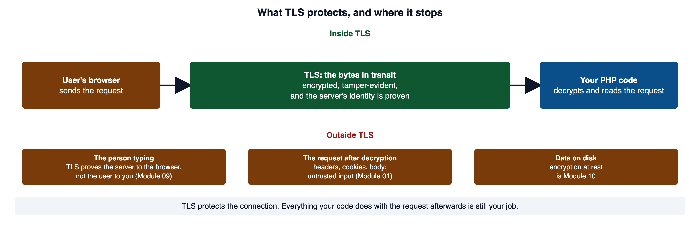
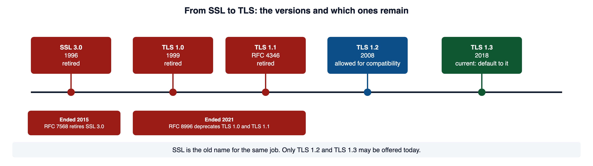
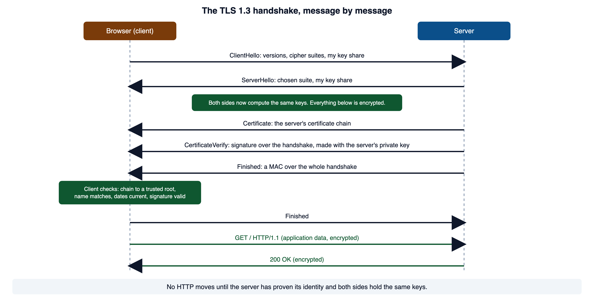
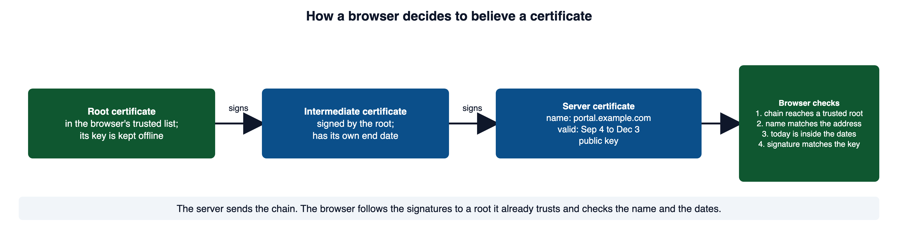
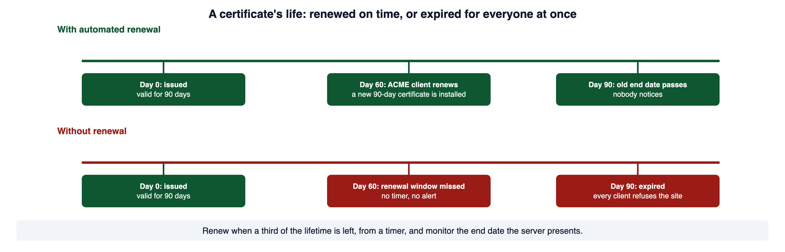
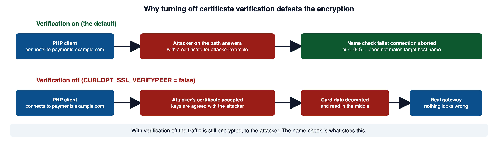
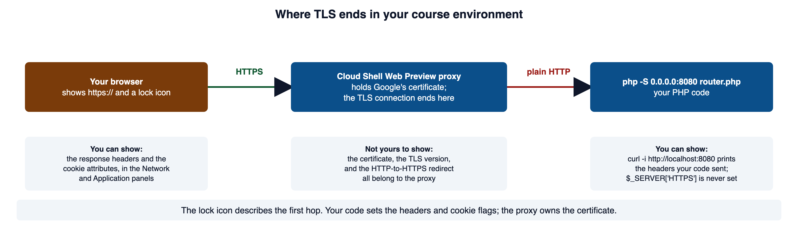
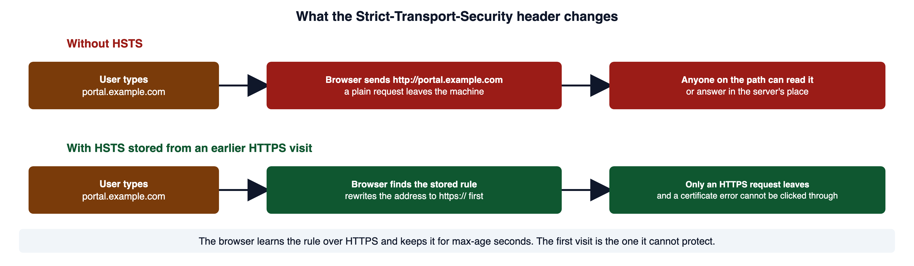

A partner sends an API key to a service. The application may validate the key perfectly, but the connection also needs to protect the key and identify the intended server. This module explains TLS and the deployment decisions that surround it.
Read this page with your course environment open, so you can send each request from the Cloud Shell terminal and read the headers that come back. Red code blocks show a shape to recognize and never ship. Green code blocks show the pattern to copy.
1Required reading
These two are required reading for the module. This page teaches everything the assignment and the quiz need; the readings give the same material in the industry's own words, which is what a certificate error, a scanner finding, or a security advisory will use.
- OWASP Top 10:2025 A04 Cryptographic Failures. The risk category for unprotected data in transit. It says all data in transit should be encrypted at the transport layer, with TLS 1.2 or newer, and that HTTPS should be enforced with HSTS.
- OWASP Transport Layer Security Cheat Sheet. The operative reference for this module: protocol versions, certificates, TLS on every page, cookies, and client certificates.
2What TLS protects, and what it does not
Module 10 protected data at rest, in the database. This module protects data in transit, while it moves between the browser and the server. The hard part of the module is knowing where that protection stops. OWASP files this family of failures under A04 Cryptographic Failures: data that should have been protected in transit or at rest was not, or the protection was weak enough to defeat.
HTTP is a plain protocol. MDN describes HTTP messages as readable by humans, and the request and the response travel as text over a TCP connection. Anyone who can see that connection can read a password or a session cookie exactly as it was typed. Sending sensitive data that way is cleartext transmission of sensitive information (CWE-319).
Module 01 section 3 gave you the three security objectives. TLS gives you all three for the bytes on the wire, and only for those bytes. RFC 8446, the TLS 1.3 standard, states them this way.
- Confidentiality. Data sent over the channel is visible only to the two endpoints.
- Integrity. Data sent over the channel cannot be changed by an attacker without the change being detected.
- Authentication. The server side of the channel is always authenticated. The client side is optionally authenticated.

Open full-size image (opens in a new tab)Read each of these as a boundary. TLS does not do the following.
- It does not decide whether a user may reach a record. That is authorization, from Module 08.
- It does not validate input or encode output, so it stops neither SQL injection nor cross-site scripting.
- It does not protect data after the server decrypts it, or data written to disk, which was Module 10.
- It does not make a secret in a URL acceptable. A URL lands in browser history and server logs no matter how the request travelled.
RFC 8446, section 1 states the three properties quoted above and says the server is always authenticated while the client is optional. MDN: Overview of HTTP describes HTTP as a human-readable protocol sent over TCP, or over a TLS-encrypted TCP connection.
3SSL, TLS, and the versions you will meet
You will hear "SSL certificate," "SSL/TLS," and "TLS" used for the same thing. The names come from the protocol's history.
Here is the line of versions, with the documents that introduced or retired each one.
| Version | Introduced | Status today |
|---|---|---|
| SSL 2.0, SSL 3.0 | Netscape; SSL 3.0 is dated November 1996 | Retired. RFC 7568 (2015) says SSLv3 "MUST NOT be used"; OWASP says SSLv2 and SSLv3 must always be disabled |
| TLS 1.0 | RFC 2246, January 1999 | Retired. RFC 8996 (2021) formally deprecates it |
| TLS 1.1 | RFC 4346 | Retired. RFC 8996 deprecates it with 1.0 |
| TLS 1.2 | RFC 5246, August 2008 | Allowed for compatibility |
| TLS 1.3 | RFC 8446, August 2018 | Current. Default to it |

Open full-size image (opens in a new tab)Why the old versions were retired matters for reading an advisory. RFC 8996 explains that TLS 1.0 and 1.1 protect the handshake with a running SHA-1 hash, and neither version lets the two sides pick a stronger hash. The only fix was a newer version. RFC 7568 points to the long series of attacks on SSL 3.0 since 1996 and requires that it not be used.
A phrase like "SSL certificate" is still common. The certificate is the same certificate TLS uses; the name is a leftover. When you read "SSL" in a product name or a log line, read it as TLS unless the context names a version.
RFC 6101 is the historical record of SSL 3.0, dated November 18, 1996, written by Netscape engineers. RFC 2246 is TLS 1.0, January 1999, and holds the "not dramatic" sentence. RFC 5246 is TLS 1.2, August 2008. RFC 7568 retires SSL 3.0 and RFC 8996 retires TLS 1.0 and 1.1, with the SHA-1 reasoning. MDN: TLS glossary entry says TLS was formerly known as SSL and that major browsers removed TLS 1.0 and 1.1 in early 2020.
4The TLS handshake
You will not write a handshake. You will read error messages and logs about it for the rest of your career, so learn its shape.
RFC 8446 describes the TLS 1.3 handshake in three phases. Read it as a sequence of messages.
- Key exchange. The client sends
ClientHello: the versions and cipher suites it supports, and its share of the key agreement. The server answers withServerHello: the choices it made and its own share. From this point both sides can compute the same keys, and every later handshake message is encrypted. - Server parameters. The server sends the settings for the rest of the connection and, if it wants the client to prove its identity too, a
CertificateRequest. On the web it almost never does, which section 7 picks up. - Authentication. The server sends
Certificate(its certificate chain),CertificateVerify(a signature over the whole handshake so far, made with the private key that matches the certificate), andFinished(a message authentication code over the handshake). The client checks all three, then sends its ownFinished.
Then application data, your HTTP request, flows under the agreed keys.

Open full-size image (opens in a new tab)You can read the result of a real handshake with curl. The -v flag prints what the client negotiated and what certificate it checked. Here is a trimmed run against Let's Encrypt's own site.
curl -sv -o /dev/null https://letsencrypt.org/ 2>&1 | grep -E "SSL connection|subject:|start date|expire date|issuer:"* SSL connection using TLSv1.3 / AEAD-CHACHA20-POLY1305-SHA256 / [blank] / UNDEF
* subject: CN=letsencrypt.org
* start date: Sep 4 14:34:32 2026 GMT
* expire date: Dec 3 14:34:31 2026 GMT
* issuer: C=US; O=Let's Encrypt; CN=YE2The first line is the version and cipher suite the two sides agreed on. The next four are the certificate the client validated: the name it covers, the dates it is valid for, and who issued it. Those are the facts the next two sections are about.
RFC 8446, section 2 is the protocol overview this section follows: the three phases, ClientHello and ServerHello, the optional CertificateRequest, and the Certificate, CertificateVerify, and Finished messages. Its section 1.2 says all handshake messages after ServerHello are encrypted and that static RSA and Diffie-Hellman suites were removed so every key exchange provides forward secrecy. MDN: Transport Layer Security gives the same handshake in four plain steps and names encryption, integrity, and authentication as what TLS provides.
5Certificates and the chain of trust
The handshake proves the server holds the private key for the certificate it sent. The certificate is what ties that key to a name.

Open full-size image (opens in a new tab)The client checks these things before it trusts the connection.
- The chain. Each certificate is signed by the one above it, and the top one is in the client's trusted root list. Let's Encrypt describes the goal from the CA's side: the browser must be able to validate the signatures all the way up to a root it trusts. CAs keep the root's key offline and sign day-to-day certificates with intermediates, which is why there is a middle link at all.
- The name. The certificate must cover the exact hostname the client requested. A mismatch is improper validation of certificate with host mismatch (CWE-297).
- The dates. The current time must fall inside the validity period. Skipping this is improper validation of certificate expiration (CWE-298).
- The signature.
CertificateVerifyfrom section 4 must check out against the public key in the certificate, which proves the server holds the matching private key.
The name check carries the most weight. Without it, a valid certificate for any domain at all would satisfy the connection, and an attacker holding a real certificate for their own site could stand in for yours. Here is what each failure looks like from curl, against test hosts that fail on purpose.
curl https://wrong.host.badssl.com/curl: (60) SSL: no alternative certificate subject name matches target host name 'wrong.host.badssl.com'curl https://expired.badssl.com/curl: (60) SSL certificate problem: certificate has expiredcurl https://self-signed.badssl.com/curl: (60) SSL certificate problem: self signed certificateEach message is a check doing its job. The first certificate was real and trusted, and it was issued for a different name. The second was real and its dates had passed. The third was signed by nobody the client trusts.
MDN: Digital certificate defines a certificate as a data file that binds a public key to an organization, most often signed by a certificate authority. MDN: Certificate authority defines the CA and says browsers come preloaded with a list of root certificates that a site's certificate must chain back to. Let's Encrypt: Chains of Trust shows a real root, intermediates, and end-entity certificates and says the root key is kept offline. CWE-297 and CWE-298 are the name and expiry checks as the profession names them.
6Certificate lifetime and automated renewal
Every certificate has a start date and an end date. The end date is not a formality. Section 5 showed that a client refuses an expired certificate, and it refuses it for everyone at once.
Let's Encrypt, the nonprofit CA that MDN names as widely used, issues certificates that are valid for 90 days by default, and it recommends renewing them at about the 60-day mark. Its integration guide puts the rule generally: renew when a third of the lifetime is left, which for 90 days means 30 days before expiry. The CA explains the short lifetime two ways: it limits the damage from a stolen key or a wrongly issued certificate, and it forces operators to automate, because nobody renews by hand every two months for long.

Open full-size image (opens in a new tab)The flow for a renewal is short.
- A timer on the server runs the ACME client, Let's Encrypt asks that it run at a random time of day.
- The client checks whether the certificate is inside its renewal window, a third of the lifetime remaining.
- If it is, the client proves control of the domain again, receives a new certificate, installs it, and reloads the web server.
- Monitoring checks the expiry date the server actually presents, the
expire dateline from section 4, and alerts a person when it is closer than the renewal window allows.
Step 4 is the one teams skip. An expired certificate is not detected by the renewal job that failed to run. It is detected by the first customer who cannot connect.
Let's Encrypt: FAQ states the 90-day default, the six-day option, the 60-day renewal recommendation, and the Certbot recommendation. Let's Encrypt: Integration Guide gives the rule of renewing when a third of the lifetime remains, the randomized schedule, and the advice to fetch intermediates rather than hardcode them. Let's Encrypt: Why ninety-day lifetimes for certificates? gives the two reasons. Let's Encrypt: How It Works describes the ACME domain-control step and the two challenge types. The OWASP cheat sheet in section 1 says to consider ACME so systems request and update their own certificates.
7Client certificates and mutual TLS
Section 2 said the server is always authenticated and the client is optionally authenticated. This section is the option.
In the handshake from section 4, the server turns this on by sending CertificateRequest in the server-parameters phase. RFC 8446 says a server that authenticates with a certificate may optionally request a certificate from the client, and the client must then send its own Certificate and CertificateVerify. The server checks the client's chain against the CA it trusts for clients, which is usually a private CA the organization runs, not a public one.
Your PHP code meets client certificates from the client side: when PHP calls another service that requires one. With curl, two options name the certificate and its key.
<?php
// WHY: TLS peer and hostname verification bind the encrypted connection to the expected server identity.
$ch = curl_init('https://partner-api.example.com/orders');
curl_setopt_array($ch, [
CURLOPT_RETURNTRANSFER => true,
CURLOPT_SSLCERT => '/etc/techcorp/client.crt.pem', // our certificate, PEM format
CURLOPT_SSLKEY => '/etc/techcorp/client.key.pem', // its private key
]);
$response = curl_exec($ch);
if ($response === false) {
error_log('Partner API call failed: ' . curl_error($ch));
}Secure. Why: TLS peer and hostname verification bind the encrypted connection to the expected server identity.
With PHP's stream functions the same two files go in the SSL context as local_cert and local_pk. In both cases peer verification stays on; presenting your own certificate never replaces checking the server's.
The private key file is a credential. It goes outside the web root, readable only by the account that runs PHP, and it is rotated like the keys in Module 10 section 12.
RFC 8446, section 4.3.2 says a server authenticating with a certificate may optionally request a certificate from the client, and section 4.4.2 says the client must send its Certificate if and only if the server asked. PHP Manual: cURL constants documents CURLOPT_SSLCERT as a PEM certificate file and CURLOPT_SSLKEY as its private key, beside the two verification options the next section uses. PHP Manual: SSL context options documents local_cert and local_pk for stream clients.
8Certificate validation in outbound PHP calls
Your application is a TLS client whenever PHP calls another HTTPS service: a payment gateway, a partner API, a webhook receiver. The checks the browser runs in section 5 have to run in your code too. Skipping them is improper certificate validation (CWE-295).
The temptation, when a certificate error blocks development, is to turn the check off. It appears in real codebases for exactly that reason.
<?php
// WHY: Disabling certificate checks accepts an encrypted connection without authenticating the intended server.
$ch = curl_init('https://payments.example.com/charge');
curl_setopt($ch, CURLOPT_RETURNTRANSFER, true);
// These two lines keep the encryption and throw away the identity check.
curl_setopt($ch, CURLOPT_SSL_VERIFYPEER, false);
curl_setopt($ch, CURLOPT_SSL_VERIFYHOST, 0);
$response = curl_exec($ch);Vulnerable. Why: Disabling certificate checks accepts an encrypted connection without authenticating the intended server.

Open full-size image (opens in a new tab)The repair is to leave both checks on. The manual says CURLOPT_SSL_VERIFYPEER defaults to true and CURLOPT_SSL_VERIFYHOST defaults to 2, so the safest version sets nothing extra. Writing them out makes the intent visible to the next reader.
<?php
// WHY: Keeping certificate and hostname checks enabled rejects a peer that cannot establish the expected identity.
$ch = curl_init('https://payments.example.com/charge');
curl_setopt_array($ch, [
CURLOPT_RETURNTRANSFER => true,
CURLOPT_SSL_VERIFYPEER => true, // the chain must lead to a trusted root
CURLOPT_SSL_VERIFYHOST => 2, // the name in the certificate must match the host
]);
$response = curl_exec($ch);
if ($response === false) {
// A verification failure is the check working. Fix the trust store; do not bypass the check.
error_log('Outbound TLS failed: ' . curl_error($ch));
}Secure. Why: Keeping certificate and hostname checks enabled rejects a peer that cannot establish the expected identity.
The stream functions, file_get_contents with an https:// URL and the like, have the same two switches with the same safe defaults: verify_peer and verify_peer_name are both true. If you must trust a private CA, point cafile at its certificate bundle instead of turning verification off.
<?php
// WHY: Stream-context verification options preserve both trust-chain and hostname checks for the TLS peer.
$context = stream_context_create(['ssl' => [
'verify_peer' => true,
'verify_peer_name' => true,
'cafile' => '/etc/techcorp/internal-ca.pem', // trust our CA, keep the checks on
]]);
$body = file_get_contents('https://inventory.internal.example/stock', false, $context);Secure. Why: Stream-context verification options preserve both trust-chain and hostname checks for the TLS peer.
PHP Manual: cURL constants documents CURLOPT_SSL_VERIFYPEER (default true) and the three values of CURLOPT_SSL_VERIFYHOST. PHP Manual: SSL context options documents verify_peer, verify_peer_name, allow_self_signed, and cafile, with their defaults. CWE-295: Improper Certificate Validation is the weakness by name.
9What TLS means in your course environment
Everything above describes a server that terminates TLS itself. Your portal does not, and you need to know exactly what you can and cannot show from it.
scripts/start.sh starts the portal with php -S 0.0.0.0:8080 router.php. That is PHP's built-in web server, and it speaks plain HTTP. The PHP manual says the built-in server is meant to aid development, is not intended for production, and should not be used on a public network. Nothing in its documentation offers TLS.
You open the portal through Cloud Shell's Web Preview, at an address of the form https://8080-<your host>. Google's documentation says the preview works through a series of HTTP proxies, and that the ports are available only to the secure Cloud Shell proxy service, which restricts access over HTTPS to your user account only. The proxy holds the certificate and runs the handshake with your browser. It then forwards the request to your php -S process as plain HTTP.

Open full-size image (opens in a new tab)You can see the second hop directly. From the Cloud Shell terminal, a request to http://localhost:8080 goes to your process without the proxy, and PHP reports no HTTPS at all.
<?php
// https.php: what the PHP process knows about its own connection
var_dump(isset($_SERVER['HTTPS']));curl http://localhost:8080/https.phpbool(false)The manual says $_SERVER['HTTPS'] is set to a non-empty value when the script was queried through HTTPS. Under php -S it is never set, whether the request came from the terminal or through the preview.
When TLS ends at a proxy, the application learns the original scheme from a request header such as X-Forwarded-Proto, which MDN describes as the de-facto standard header for the protocol a client used to reach a proxy or load balancer. In PHP it arrives as $_SERVER['HTTP_X_FORWARDED_PROTO']. It is a request header, and Module 01 section 4 settled what request headers are: client-controlled input. Trust it only when the only path to your process is through the proxy that sets it, and never when the process is reachable directly.
PHP Manual: Built-in web server says the server aids development, is not for production or a public network, and documents the router script start.sh passes. Google Cloud: Preview web apps describes the https://$PORT-$WEB_HOST address, the chain of HTTP proxies, and HTTPS access limited to your account. PHP Manual: $_SERVER documents HTTPS and says the HTTP_* entries are built from request headers. MDN: X-Forwarded-Proto documents the header.
10HTTPS for the whole application: redirects and HSTS
Protecting the sign-in page is not protecting the application. Module 01 section 6 named the session identifier a bearer credential, and the browser sends it on every request after sign-in. If any one of those requests travels over plain HTTP, the credential is in the clear, and the encrypted sign-in page did not help. The OWASP cheat sheet says it directly: TLS should be used for all pages, not only the sensitive ones such as the login page.
Redirect plain HTTP to HTTPS
On a server that terminates TLS itself, the first job is to send every plain request to the HTTPS address. There is a wrong way to build that redirect.
<?php
// WHY: An omitted or misplaced response policy leaves the downstream browser behavior unrestricted.
// redirect.php: the destination host comes from a header the client sent.
$host = $_SERVER['HTTP_HOST'];
header('Location: https://' . $host . $_SERVER['REQUEST_URI'], true, 301);
exit;Vulnerable. Why: An omitted or misplaced response policy leaves the downstream browser behavior unrestricted.
HTTP_HOST is the request's Host header, and a client can put anything in it.
curl -i -H 'Host: evil.example' http://localhost:8080/redirect.phpHTTP/1.1 301 Moved Permanently
Location: https://evil.example/redirect.phpYour own server wrote a redirect to the attacker's site. Fix the hostname in code instead.
<?php
// WHY: The explicitly selected response policy must be applied before headers are committed.
// redirect.php: the destination host is a constant, never read from the request.
$canonicalHost = 'portal.example.com';
if (empty($_SERVER['HTTPS'])) {
header('Location: https://' . $canonicalHost . $_SERVER['REQUEST_URI'], true, 301);
exit;
}Secure. Why: The explicitly selected response policy must be applied before headers are committed.
Do not accept a sensitive request body over HTTP and then redirect. The body was already sent in the clear before your redirect ran.
HSTS
A redirect helps only after the first plain request has already gone out. HSTS closes that gap for every visit after the first.
<?php
// WHY: The explicitly selected response policy must be applied before headers are committed.
// Sent on every HTTPS response, before any output. Start with a short max-age.
header('Strict-Transport-Security: max-age=86400');Secure. Why: The explicitly selected response policy must be applied before headers are committed.
HTTP/1.1 200 OK
Strict-Transport-Security: max-age=86400
Content-type: text/html; charset=UTF-8
Open full-size image (opens in a new tab)Three facts about the header decide how you deploy it.
- It is learned over HTTPS only. MDN says browsers ignore the header when it arrives over plain HTTP, so that an attacker on the path cannot plant or expire a policy. That also means the very first visit, before the browser has seen the header, is not protected.
- It is a commitment the browser keeps. For
max-ageseconds, the browser refuses plain HTTP to that host and refuses to let the user bypass a certificate error. You cannot recall it from a browser that already stored it. If HTTPS breaks during that time, the site is unreachable for those users. includeSubDomainsextends the rule to every host under the name. AddincludeSubDomainsonly when every host under the domain, including the ones you forgot, serves HTTPS; until then, leave it out. A legacy status page or a vendor-hosted portal on a subdomain becomes unreachable for the fullmax-ageotherwise.
Deploy it in stages. Make HTTPS correct and complete for the host. Publish a short max-age, a day, and watch for breakage. Raise it toward a year once you are confident. Consider the preload list last.
In your course environment the preview hostname is a real HTTPS host to your browser, so a header you send through it is a real commitment for that hostname. Keep max-age short while you test.
MDN: Strict-Transport-Security is the source for the header's meaning, the three directives, the rule that browsers ignore it over HTTP, the no-click-through behavior, and the first-visit weakness. OWASP HTTP Strict Transport Security Cheat Sheet lists the threats the header addresses and warns that preload can have permanent consequences. HSTS Preload List Submission states the four requirements and the slow removal. PHP Manual: header says the function must be called before any output is sent.
11Cookie attributes that keep the session on HTTPS
HSTS tells the browser how to reach the host. The cookie's own attributes tell the browser how to handle the credential. Module 05 section 9 introduced Secure, HttpOnly, and SameSite, and Module 06 section 7 taught SameSite in full. This section is about Secure, the attribute that belongs to transport, and about where PHP's session cookie gets its attributes.
Here is where the portal stands. auth.php starts the session with session_start() and sets nothing about the session cookie, so the cookie carries PHP's defaults. The sign-in page's real response shows what that means.
curl -i http://localhost:8080/login.phpHTTP/1.1 200 OK
Set-Cookie: PHPSESSID=28e223ae2afcd4e28730106a08e800d2; path=/
Cache-Control: no-store, no-cache, must-revalidateNo Secure, no HttpOnly, no SameSite. A session cookie that can travel over plain HTTP is a sensitive cookie in an HTTPS session without the Secure attribute (CWE-614). One that page script can read is a sensitive cookie without the HttpOnly flag (CWE-1004). auth.php also sets a second cookie by hand, setcookie('role', $account['role'], 0, '/'), with no attributes at all; the deeper problem with that cookie, a role the client can edit, was Module 08's.
PHP's session cookie is not created by a setcookie call you can find. session_start() creates it, and its attributes come from session_set_cookie_params(), which must run first. Here is a shared bootstrap for a different application, with all three attributes set.
<?php
// WHY: Session cookie settings must be selected before session startup so the session cookie uses the intended policy.
// bootstrap.php: every page includes this before it does anything else.
session_set_cookie_params([
'lifetime' => 0, // a browser-session cookie; restoration may preserve it
'path' => '/',
'secure' => true, // sent only over https:
'httponly' => true, // not readable by page script
'samesite' => 'Lax', // withheld on cross-site POST, Module 06 section 7
]);
session_start();Secure. Why: Session cookie settings must be selected before session startup so the session cookie uses the intended policy.
HTTP/1.1 200 OK
Set-Cookie: PHPSESSID=16a9034d8472e7e404caf385f48e5e1c; path=/; secure; HttpOnly; SameSite=LaxFor a cookie you set yourself, setcookie() takes the same attributes as an options array, and the manual says the same thing about secure: it is on the programmer to send such a cookie only on a secure connection, and the samesite value None requires secure too.
<?php
// WHY: Explicit cookie options restrict delivery and script access for this particular cookie.
// A "remember this device" cookie set by hand, for a different application.
setcookie('device_token', $token, [
'expires' => time() + 60 * 60 * 24 * 30,
'path' => '/',
'secure' => true,
'httponly' => true,
'samesite' => 'Lax',
]);Secure. Why: Explicit cookie options restrict delivery and script access for this particular cookie.
PHP Manual: session_set_cookie_params documents the options array with secure, httponly, and samesite, and says the function must be called before session_start(). PHP Manual: setcookie documents the same keys for a hand-set cookie and the None requires secure rule. W3Schools: PHP setcookie() Function is an independent walk-through of the secure and httponly parameters. MDN: Set-Cookie defines Secure with its localhost exception, HttpOnly, and the SameSite values. CWE-614 and CWE-1004 are the two missing-attribute weaknesses by name.
12What HTTPS does not cover
A valid certificate and a Secure cookie do not make a page safe on their own. Three gaps survive them, and each leaks data the transport was supposed to protect.
Mixed content
An HTTPS page that loads a script, a stylesheet, an image, or a frame over plain HTTP has an unprotected part.
<!-- An HTTPS page loading its script over plain HTTP. -->
<script src="http://cdn.example.com/app.js"></script>A script delivered over HTTP could be replaced by anyone on the path, and it would then run with the page's full authority. That is why browsers block it, which usually turns the mistake into a broken feature rather than a breach. Load every resource over HTTPS and the question never comes up.
<script src="https://cdn.example.com/app.js"></script>Caches
TLS protects data while it moves. It does not protect a copy saved afterwards in a browser cache or a shared proxy cache. Mark a sensitive response so no cache keeps it. MDN says no-store tells caches of any kind, private or shared, not to store the response.
<?php
// WHY: The explicitly selected response policy must be applied before headers are committed.
header('Cache-Control: no-store');Secure. Why: The explicitly selected response policy must be applied before headers are committed.
PHP's session layer already sends Cache-Control: no-store, no-cache, must-revalidate on pages that start a session, which is the line you saw in section 11's responses.
Secrets in URLs
A secret placed in a URL leaks in ways the transport cannot reach. The OWASP Session Management Cheat Sheet says a session identifier in a URL can be disclosed through web links, logs, browser history and bookmarks, the Referer header, and search engines. The same is true of a reset token or an API key. Keep secrets in the request body or in a header, never in the path or the query string.
MDN: Mixed content defines the term, the upgradable and blockable categories, and current browser behavior. MDN: Cache-Control defines no-store. OWASP Session Management Cheat Sheet lists the places a URL-carried identifier leaks and states the three cookie attributes as requirements.
13Verifying that HTTPS is enforced
Available is not the same as enforced. A host can answer HTTPS while still letting the session leave the encrypted channel. The evidence that transport is enforced is a set of behaviors you can observe, and each row below names one.
| Check | What enforced looks like | From your portal |
|---|---|---|
| The session cookie | Set-Cookie carries Secure, HttpOnly, and a SameSite value | yes: curl -i on the sign-in page, or the Application panel |
| The HSTS header | present on every HTTPS response, with a max-age | yes: curl -i, or the Network panel's response headers |
| A plain HTTP request | redirected to the canonical HTTPS host, and nothing sensitive accepted first | no: the proxy owns the public address |
| The certificate | trusted chain, correct hostname, current dates | no: the certificate is the proxy's |
| A wrong-name or expired certificate | the client refuses it, as in section 5 | yes, against a test host such as expired.badssl.com |
| Protocol versions offered | TLS 1.3 and 1.2 only | no: negotiated at the proxy |
| Every page resource | loaded over HTTPS, no mixed content | yes: the browser console reports a blocked or upgraded resource |
| URLs | carry no session identifiers, tokens, or personal data | yes: read the addresses the pages produce |
| Outbound PHP clients | verify the peer and the hostname | yes: read the code |
Read the table as the difference between offered and required. When the cookie carries its flags, the header is present, and nothing sensitive travels in a URL, your code has done its part. When HTTPS answers but the cookie has no Secure flag and no HSTS header is sent, the transport is offered and not enforced, and the work is not finished. For the rows your portal cannot show, say in your evidence that the proxy owns them.
For a production host, two public tools report the rows the proxy hides here.
14Common misconceptions
✕"The lock icon means the application is secure."
It speaks to the transport and the server's identity. Every application flaw in this course works over a valid HTTPS connection.
✕"SSL and TLS are different technologies."
TLS is the standardized successor to SSL and does the same job. Every current version is TLS; every version of SSL is retired.
✕"Encrypt the sign-in page and you are done."
The session cookie travels on every request after sign-in, so every page has to be HTTPS, and the cookie has to carry
Secure.✕"A self-signed certificate means there is no encryption."
It encrypts. What it lacks is a chain to a trusted root, so it establishes no identity a browser can verify.
✕"A certificate that was valid when we shipped stays valid."
Every certificate in the chain has an end date, and a client refuses an expired one as firmly as a forged one.
✕"Users can click through a certificate warning if they know the site."
Clicking through discards server authentication, which is the property that stops interception.
✕"Disabling certificate verification is fine for an internal service."
It removes authentication on the internal network, where a machine in the middle is still possible. Point the client at the internal CA instead.
✕"HSTS will fix our broken HTTPS."
HSTS commits browsers to HTTPS. If HTTPS does not work, it commits them to an outage.
✕"Our portal runs under HTTPS, so our code handled TLS."
The proxy handled TLS. The code set the headers and cookie attributes an HTTPS site needs, which is a different and real contribution.
15Check your understanding
Work these before you look at the answers.
- Name the three properties TLS provides for traffic in transit, and name three things it does not do.
- What is the relationship between SSL and TLS, and which versions may a web application offer today?
- In the TLS 1.3 handshake, what do
Certificate,CertificateVerify, andFinishedeach prove? - Why is the hostname check the part of certificate validation that carries the security value?
- A certificate expires. Name the control that should have prevented the outage and the control that should have detected it.
- A self-signed certificate encrypts the channel. What does it not provide, and why does that matter on a public site?
- When is mutual TLS a good fit, and when is it not?
- A PHP client sets
CURLOPT_SSL_VERIFYPEERtofalseand the call succeeds with no error. What was lost, and how does an attacker use it? - What does the
Secureattribute add to a session cookie, and where in PHP do you set it for the session cookie? - Why is
includeSubDomainsin an HSTS header a decision that is hard to undo? - In your course environment, which three things about TLS can you not evidence from your own portal, and why?
- An HTTPS page loads a script over HTTP. Why is that unsafe, and what do current browsers do about it?
Answers: (1) confidentiality, integrity, and server authentication; it does not authorize a user, does not validate input or encode output, and does not protect data after decryption or at rest. (2) TLS is the IETF's standardized successor to Netscape's SSL and does the same job; default to TLS 1.3, allow 1.2 for compatibility, and disable SSL 2, SSL 3, TLS 1.0, and TLS 1.1. (3) Certificate carries the server's certificate chain, CertificateVerify proves the server holds the private key for it by signing the handshake, and Finished proves the whole handshake arrived unchanged. (4) without it any valid certificate for any domain would satisfy the connection, so an attacker with a certificate for a site they own could impersonate yours. (5) automated renewal when a third of the lifetime remains should have prevented it, and monitoring of the expiry date the server presents should have detected the renewal that did not happen. (6) it provides no chain to a trusted root and so no verifiable identity, so a browser cannot tell it from an impostor's certificate. (7) one machine calling another, such as a partner server calling an API, where the caller holds a key file; not people at browsers, where client certificates are rare. (8) authentication is lost while encryption remains, so an attacker on the path presents any certificate, the client accepts it, and the attacker decrypts, reads, and forwards the traffic. (9) the browser sends the cookie only on https: requests, so it never travels in the clear; for PHP's session cookie set it in session_set_cookie_params() before session_start(). (10) it binds every subdomain, including forgotten ones, and browsers keep the stored policy for the full max-age, which you cannot recall. (11) the certificate, the negotiated TLS version, and an HTTP-to-HTTPS redirect at the server, because Cloud Shell's proxy terminates TLS and php -S speaks plain HTTP. (12) a script over HTTP could be replaced on the path and would run with the page's full authority, so browsers block it as blockable mixed content.
16References and further study
The two required readings in section 1 and the manual and MDN pages linked through the lecture are the main references. Each entry below names what it confirms.
- RFC 8446: The Transport Layer Security (TLS) Protocol Version 1.3rfc-editor.org
The standard behind sections 2, 4, and 7, dated August 2018; it obsoletes TLS 1.2.
- CWE-319: Cleartext Transmission of Sensitive Informationcwe.mitre.org
The formal entry behind section 2: sensitive data sent in cleartext on a channel an attacker can sniff.
- OWASP Transport Layer Security Cheat Sheet, Protocolscheatsheetseries.owasp.org
The version policy quoted in section 3, with the SSL naming history.
- PHP Manual: Session management basicsphp.net
The PHP-side account of the cookie attributes in section 11 and the ways an identifier leaks.
- W3Schools: PHP header() Functionw3schools.com
An independent reference for the
header()call sections 10 and 12 use. - Mozilla: Server Side TLSwiki.mozilla.org
The reasoning behind the modern configuration profile MDN points to in section 4, including why it drops what it drops.
Videos.